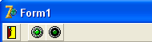

Кнопка SpeedButton
Создайте новое приложение.
Установите на форму панель, очистите у нее свойство Caption, свойство Align установите в alTop, чтобы она заняла весь верх формы.
Свойство Height установите в 24.
Теперь перейдите на вкладку Additional и найдите кнопку SpeedButton.
Установите ее на панель.
Чтобы прижать ее к самому левому краю, свойство Left установите в 0.
Теперь взгляните на свойство Height, оно равно 22.
У панели это свойство равно 24.
Следовательно, чтобы кнопка была посередине панели, нужно свойство Top установить в 1.
Тогда сверху и снизу кнопки получится по 1 пикселю.
Теперь рассмотрим, что эта кнопка умеет делать.
Прежде всего, она отличается от других кнопок тем, что не имеет фокуса ввода.
Что это означает?
При работе программы один из компонентов имеет фокус ввода, он выделен.
Если это компонент для ввода текста (Edit, Memo), то пользователь сразу может вводить текст.
Если это кнопка, то пользователь может нажать <Enter>, что будет равносильно нажатию на кнопку мышью.
Кроме того, клавишей <Tab> можно перемещать фокус ввода от одного компонента к другому, порядок выделения компонентов определяется их свойством TabOrder.
А кнопка SpeedButton фокуса ввода не имеет, ее нельзя выделить клавишей <Tab>, а если вы щелкните по ней мышью, то фокус ввода вернется к тому компоненту, в котором был до этого.
Свойство Glyph у этой кнопки работает так же, как у BitBtn и позволяет загрузить на кнопку изображение.
Откройте диалоговое окно этого свойства и выберите картинку "DoorOpen" из стандартной коллекции Delphi.
Щелкните дважды по кнопке SpeedButton и напишите там выход из программы:
Close;
Сохраните проект, скомпилируйте его и посмотрите, как кнопка работает.
Во всех современных приложениях такие кнопки обычно выглядят более плоскими.
Чтобы убрать выпуклость кнопки, измените свойство Flat на True.
Теперь познакомимся еще с одним свойством, которое имеет большинство компонентов.
Это система подсказок Hint, подсказка выходит, когда пользователь наведет указатель мыши на компонент.
В свойстве Hint кнопки напишите "Выход из программы".
Однако этого мало, нужно еще разрешить подсказке выходить на экран.
За это отвечает свойство ShowHint.
Но внимание!
Если мы установим это свойство в True, то только эта кнопка сможет выводить подсказку, для других кнопок его тоже придется выставлять в True.
Чтобы этого не делать, можно установить свойство ShowHint в True у родительского компонента – панели или самой формы.
Тогда все компоненты, расположенные на этом объекте, будут иметь True в этом свойстве.
Давайте установим это свойство в True у формы.
Теперь и панель, и кнопка тоже имеют True в ShowHint.
И любая следующая кнопка, которую мы бросим на панель рядом с первой, также будут иметь возможность выводить подсказку.
Скомпилируйте проект и посмотрите, как он работает.
Однако это еще не предел возможностей кнопки SpeedButton.
Ее еще можно группировать.
Установим рядом еще две таких кнопки.
Сделайте так, чтобы они были вплотную друг к другу, но чуть поодаль от первой кнопки.
На первую наложите рисунок "led2on", на вторую – "led2off" из коллекции изображений Delphi:
Эти кнопки расположены рядом, и имеют схожие картинки.
Таким образом, пользователь уже видит, что они относятся к какому-то одному свойству.
Выделите обе кнопки и установите у них свойство GroupIndex в единицу.
Этим самым мы сгруппировали их в одну индексную группу.
Теперь у любой из них установите свойство Down (нажата) в True.
Сохраните проект, скомпилируйте его и посмотрите, как работает индексная группа.
Нажмите другую кнопку, первая отожмется.
И наоборот.
Именно таким образом вы можете, к примеру, выбрать начертание шрифта или выравнивание абзаца в MS Word.
Вы можете устанавливать сколько угодно групп, и каждой присваивайте в свойстве GroupIndex свою цифру.
Ноль означает, что кнопка не принадлежит ни к какой группе.
У кнопки с групповым индексом 0 вы просто не сможете перевести свойство Down в True.
Такая панель инструментов выглядит более привлекательно, чем просто панель с кнопками, не правда ли?
Однако есть более профессиональный способ организации панели инструментов.